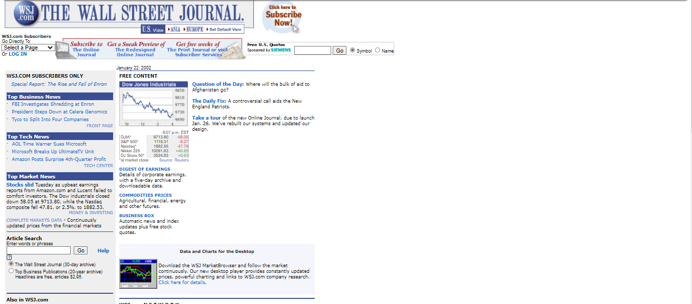
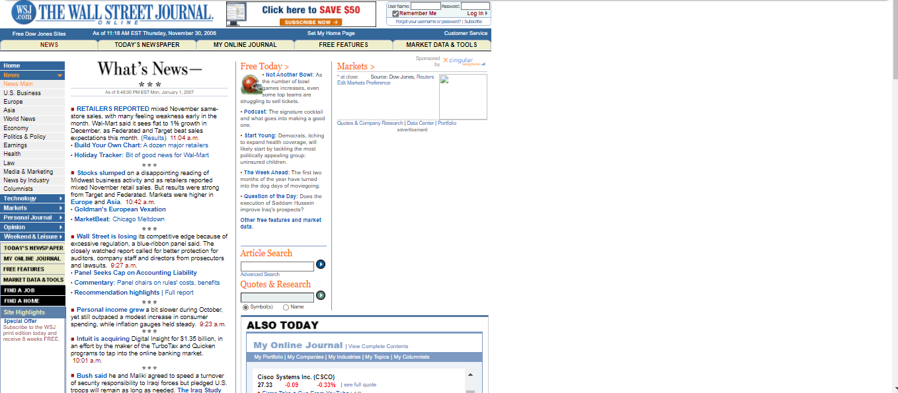
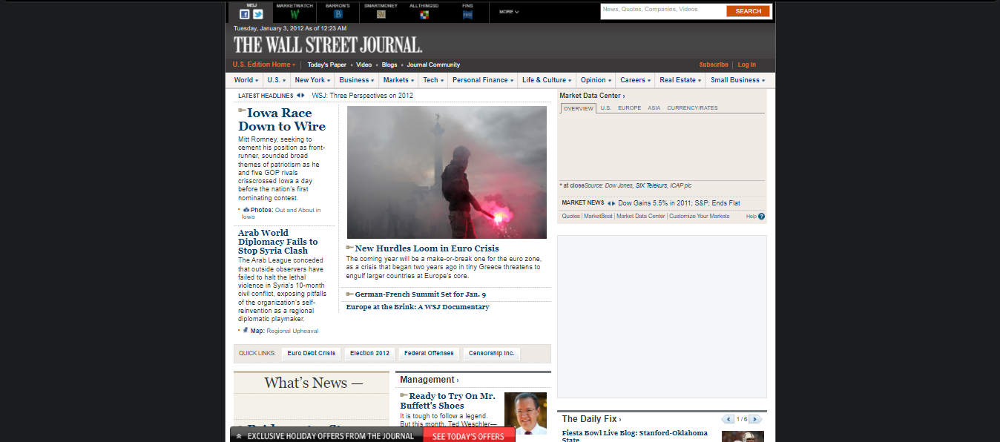
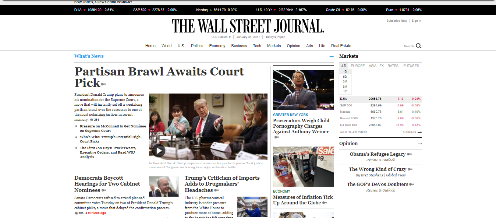
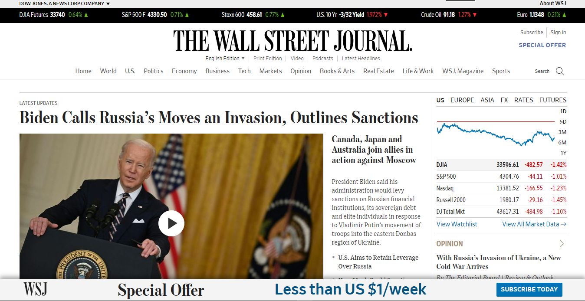

The Wall Street Journal.
A proposta inicial do site The Wall Street Journal foi pelos meios digitais começar as suas divulgações de notícias envolvendo finanças e economia no ano de 1996, que até então divulgavam apenas em jornais impressos nos Estados Unidos.
Ao longo dos anos o site teve muitas mudanças e evoluções
Confira abaixo na linha do tempo
Linha do Tempo
WSJ em 2002
Neste ano o site não fazia o uso de imagens, sua proporção era ajustada somente para monitores da época e não tinha um menu de navegação para melhor acessibilidade as informações do site
WSJ em 2007
Adicionado o menu de nevegação na esquerda, neste ano o site teve uma visível evolução. Agora suas notícias ficam destacadas no centro da página, mas a proporção do site continuava para monitores da época
WSJ em 2012
Fazendo a utilização de algumas imagens para enfatizamento da notícia e seu cabeçalho em um tom mais escuro, o menu de navagação saiu da esquerda para cima do site. A proporção do site continua para monitores da época, porém, agora centralizado ao meio
WSJ em 2017
Agora a proporação do site esta ajustável para monitores mais modernos, podemos ver também pelo menos uma imagem para cada notícia e mudança nos títulos das matérias para a cor preta. No cabeçalho, um gráfico da bolsa de valores foi adicionado
WSJ em 2022
Semelhante ao mesmo site de 2017, em 2022 a última notícia enviada tem um destaque maior da página de inicio, fazendo a utilização de um video para representação da notícia
Como este site pode alcançar o público jovem de periferia?
Em relação ao Brasil, por se tratar de um site de notícias sobre finanças e economia, é "natural" que este site não alcance a maioria do público jovem de periferia, principalmente pelo fato de nosso sistema não dar a devida importância no ensino regular para estes assuntos. Uma solução seria divulgar assuntos em suas notícias que gerem interesse aos jovens com a realidade da periferia e como isso reflete em suas vidas e na economia do país.